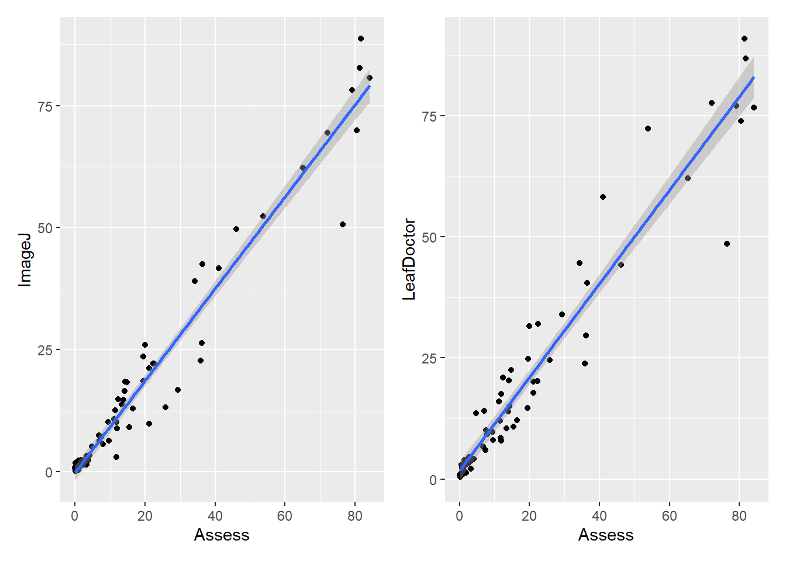
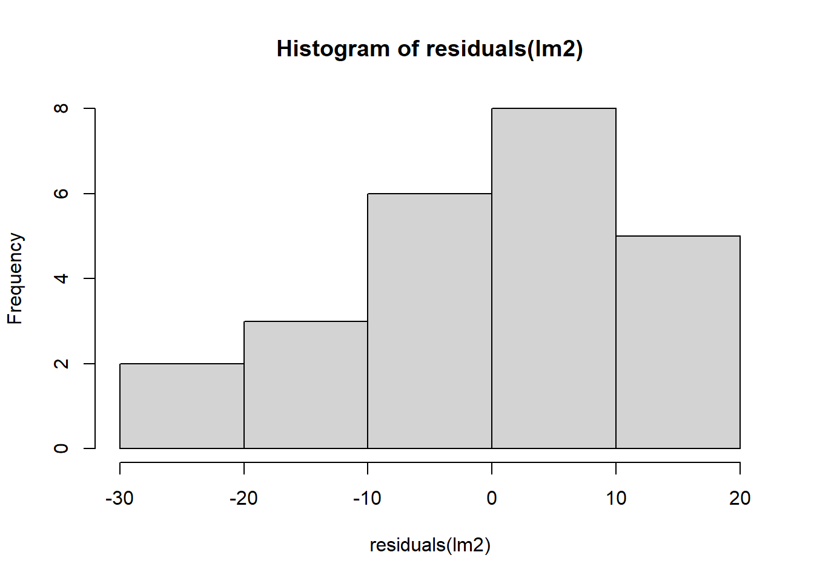
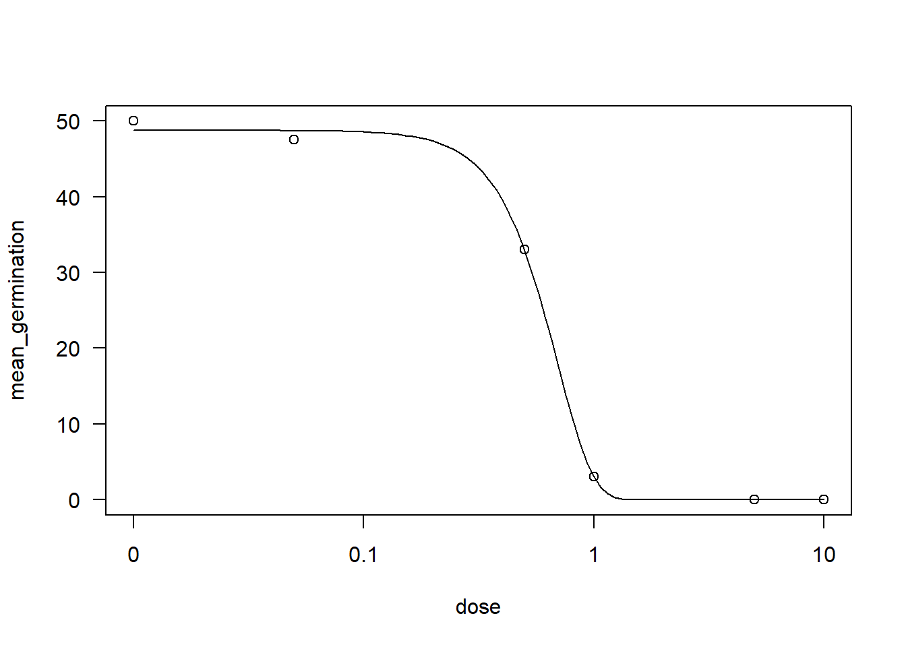

library(tidyverse)
library(readxl)
library(gsheet)
library(ggplot2)
library(DHARMa)
library(multcomp)
library(multcompView)
library(emmeans)
milho <- gsheet2tbl('https://docs.google.com/spreadsheets/d/1bq2N19DcZdtax2fQW9OHSGMR0X2__Z9T/edit#gid=1345524759')Análisis de Modelo Mixto, Correlación y Regresión Linear.
Pudrición de maíz.
Cada híbrido está dentro de cada bloque, el bloque se aleatorizó dentro de cada bloque.
Se sortean los tratamientos del híbrido y los del método.
Se sortean estos híbridos dentro de cada bloque.
Es una parcela subdivida. ¿Cuándo es una parcela sub-sub dividida? Cuando hay 3 factores.
Nuestro modelo estadístico va a ser diferente, no es híbrido vs método+ bloque, se debe utilizar el valor b o utilizar un modelo mixto (mixtura entre un factor fijo y uno aleatorio). Ese es el modelo mixto, es un paquete diferente para estructurar esta situación (efecto aleatorio del híbrido).
Parcela subdividida
Index
milho |>
ggplot(aes(method, index))+
geom_jitter(width = 0.1, alpha=0.2)+
facet_wrap(~hybrid)+
stat_summary(fun.data='mean_cl_boot', size=0.5, color = 'pink')library(lme4)
milho<-milho|>
mutate(block = as.factor(block))
mix2<- lmer(index ~ hybrid*method + block+
(1|block/hybrid), data = milho)
anova(mix2)Analysis of Variance Table
npar Sum Sq Mean Sq F value
hybrid 5 262.548 52.510 3.1194
method 1 79.053 79.053 4.6963
block 3 3.630 1.210 0.0719
hybrid:method 5 266.064 53.213 3.1612library(car)1|block/hybrid indica la función (con efecto aleatorio). El resultado para la interacción entre híbrido y method es significativa.
Premisas
library(performance)
check_normality(mix2)OK: residuals appear as normally distributed (p = 0.635).check_heteroscedasticity(mix2)Warning: Heteroscedasticity (non-constant error variance) detected (p = 0.009).simulate_residuals(mix2)Simulated residuals from a model of class `lmerMod` based on 250
simulations. Use `check_residuals()` to check uniformity of residuals or
`residuals()` to extract simulated residuals. It is recommended to refer
to `?DHARMa::simulateResiudals` and `vignette("DHARMa")` for more
information about different settings in particular situations or for
particular models.plot(simulateResiduals(mix2))
qqnorm(residuals(mix2))
qqline(residuals(mix2))
hist(residuals(mix2))
Test de comparar medias
medias_milho <- emmeans(mix2,
~ hybrid | method,
type = "response")
medias_milho2 <- emmeans(mix2,
~ method | hybrid,
type = "response")
cld(medias_milho, Letters = LETTERS)method = pin:
hybrid emmean SE df lower.CL upper.CL .group
BG7049H 19.4 8.13 1022 3.49 35.4 A
30K64 20.6 8.13 1022 4.59 36.5 A
30F53 YH 24.6 8.13 1022 8.64 40.6 AB
30F53 HX 25.3 8.13 1022 9.32 41.2 AB
30S31YH 32.5 8.13 1022 16.54 48.5 AB
30S31H 38.1 8.13 1022 22.14 54.1 B
method = silk:
hybrid emmean SE df lower.CL upper.CL .group
BG7049H 19.2 8.13 1022 3.22 35.1 A
30K64 21.5 8.13 1022 5.54 37.5 A
30F53 HX 25.0 8.13 1022 9.04 41.0 A
30F53 YH 26.2 8.13 1022 10.29 42.2 A
30S31H 26.5 8.13 1022 10.54 42.5 A
30S31YH 26.6 8.13 1022 10.69 42.6 A
Results are averaged over the levels of: block
Degrees-of-freedom method: kenward-roger
Confidence level used: 0.95
P value adjustment: tukey method for comparing a family of 6 estimates
significance level used: alpha = 0.05
NOTE: If two or more means share the same grouping symbol,
then we cannot show them to be different.
But we also did not show them to be the same. cld(medias_milho2, Letters = LETTERS)hybrid = 30F53 HX:
method emmean SE df lower.CL upper.CL .group
silk 25.0 8.13 1022 9.04 41.0 A
pin 25.3 8.13 1022 9.32 41.2 A
hybrid = 30F53 YH:
method emmean SE df lower.CL upper.CL .group
pin 24.6 8.13 1022 8.64 40.6 A
silk 26.2 8.13 1022 10.29 42.2 A
hybrid = 30K64:
method emmean SE df lower.CL upper.CL .group
pin 20.6 8.13 1022 4.59 36.5 A
silk 21.5 8.13 1022 5.54 37.5 A
hybrid = 30S31H:
method emmean SE df lower.CL upper.CL .group
silk 26.5 8.13 1022 10.54 42.5 A
pin 38.1 8.13 1022 22.14 54.1 B
hybrid = 30S31YH:
method emmean SE df lower.CL upper.CL .group
silk 26.6 8.13 1022 10.69 42.6 A
pin 32.5 8.13 1022 16.54 48.5 A
hybrid = BG7049H:
method emmean SE df lower.CL upper.CL .group
silk 19.2 8.13 1022 3.22 35.1 A
pin 19.4 8.13 1022 3.49 35.4 A
Results are averaged over the levels of: block
Degrees-of-freedom method: kenward-roger
Confidence level used: 0.95
significance level used: alpha = 0.05
NOTE: If two or more means share the same grouping symbol,
then we cannot show them to be different.
But we also did not show them to be the same. library(ggplot2)
library(Hmisc)
index <- milho |>
ggplot(aes(hybrid, index))+
geom_jitter(width = 0.05, color =
"gray")+
stat_summary(fun.data =
"mean_cl_boot", size = 0.5, color =
"red", alpha = 0.5)
indexyield <- milho |>
ggplot(aes(hybrid, yield))+
geom_jitter(width = 0.05, color =
"gray")+
stat_summary(fun.data =
"mean_cl_boot", size = 0.5, color =
"red", alpha = 0.5)
library(ggplot2)
library(Hmisc)
yield <- milho |>
ggplot(aes(hybrid, yield))+
geom_jitter(width = 0.05, color =
"gray")+
stat_summary(fun.data =
"mean_cl_boot", size = 0.5, color =
"red", alpha = 0.5)
library(performance)
milho |>
ggplot(aes(method, index))+
geom_jitter(width =0.1, alpha = 0.2)+
facet_wrap(~ hybrid)+
stat_summary(fun.data = "mean_cl_boot", size
= 0.5, color = "purple")library(DHARMa)
plot(simulateResiduals(mix2))
qqnorm(residuals(mix2))
qqline(residuals(mix2))
hist(residuals(mix2))
library(emmeans)
medias_milho <- emmeans(mix2,
~hybrid | method,
type= 'response'
)
medias_milho <- emmeans(mix2,
~method | hybrid,
type= 'response'
)
library(multcomp)
cld(medias_milho)hybrid = 30F53 HX:
method emmean SE df lower.CL upper.CL .group
silk 25.0 8.13 1022 9.04 41.0 1
pin 25.3 8.13 1022 9.32 41.2 1
hybrid = 30F53 YH:
method emmean SE df lower.CL upper.CL .group
pin 24.6 8.13 1022 8.64 40.6 1
silk 26.2 8.13 1022 10.29 42.2 1
hybrid = 30K64:
method emmean SE df lower.CL upper.CL .group
pin 20.6 8.13 1022 4.59 36.5 1
silk 21.5 8.13 1022 5.54 37.5 1
hybrid = 30S31H:
method emmean SE df lower.CL upper.CL .group
silk 26.5 8.13 1022 10.54 42.5 1
pin 38.1 8.13 1022 22.14 54.1 2
hybrid = 30S31YH:
method emmean SE df lower.CL upper.CL .group
silk 26.6 8.13 1022 10.69 42.6 1
pin 32.5 8.13 1022 16.54 48.5 1
hybrid = BG7049H:
method emmean SE df lower.CL upper.CL .group
silk 19.2 8.13 1022 3.22 35.1 1
pin 19.4 8.13 1022 3.49 35.4 1
Results are averaged over the levels of: block
Degrees-of-freedom method: kenward-roger
Confidence level used: 0.95
significance level used: alpha = 0.05
NOTE: If two or more means share the same grouping symbol,
then we cannot show them to be different.
But we also did not show them to be the same. cld(medias_milho2)hybrid = 30F53 HX:
method emmean SE df lower.CL upper.CL .group
silk 25.0 8.13 1022 9.04 41.0 1
pin 25.3 8.13 1022 9.32 41.2 1
hybrid = 30F53 YH:
method emmean SE df lower.CL upper.CL .group
pin 24.6 8.13 1022 8.64 40.6 1
silk 26.2 8.13 1022 10.29 42.2 1
hybrid = 30K64:
method emmean SE df lower.CL upper.CL .group
pin 20.6 8.13 1022 4.59 36.5 1
silk 21.5 8.13 1022 5.54 37.5 1
hybrid = 30S31H:
method emmean SE df lower.CL upper.CL .group
silk 26.5 8.13 1022 10.54 42.5 1
pin 38.1 8.13 1022 22.14 54.1 2
hybrid = 30S31YH:
method emmean SE df lower.CL upper.CL .group
silk 26.6 8.13 1022 10.69 42.6 1
pin 32.5 8.13 1022 16.54 48.5 1
hybrid = BG7049H:
method emmean SE df lower.CL upper.CL .group
silk 19.2 8.13 1022 3.22 35.1 1
pin 19.4 8.13 1022 3.49 35.4 1
Results are averaged over the levels of: block
Degrees-of-freedom method: kenward-roger
Confidence level used: 0.95
significance level used: alpha = 0.05
NOTE: If two or more means share the same grouping symbol,
then we cannot show them to be different.
But we also did not show them to be the same. library(ggplot2)mix3 <- lmer(yield ~ hybrid *method + block + (1|block/hybrid), data = milho)
(mix3)Linear mixed model fit by REML ['lmerMod']
Formula: yield ~ hybrid * method + block + (1 | block/hybrid)
Data: milho
REML criterion at convergence: 577.4931
Random effects:
Groups Name Std.Dev.
hybrid:block (Intercept) 1365.0
block (Intercept) 666.3
Residual 640.0
Number of obs: 48, groups: hybrid:block, 24; block, 4
Fixed Effects:
(Intercept) hybrid30F53 YH
11404.6 -1800.0
hybrid30K64 hybrid30S31H
467.5 -3089.5
hybrid30S31YH hybridBG7049H
-3371.5 762.5
methodsilk block2
-1220.0 -1251.2
block3 block4
-181.8 644.4
hybrid30F53 YH:methodsilk hybrid30K64:methodsilk
1023.5 -94.0
hybrid30S31H:methodsilk hybrid30S31YH:methodsilk
2287.0 1660.8
hybridBG7049H:methodsilk
2083.3
optimizer (nloptwrap) convergence code: 0 (OK) ; 0 optimizer warnings; 2 lme4 warnings check_heteroscedasticity(mix3)Warning: Heteroscedasticity (non-constant error variance) detected (p < .001).check_normality(mix3)OK: residuals appear as normally distributed (p = 0.211).library(DHARMa)
plot(simulateResiduals(mix2))qqnorm(residuals(mix2))
qqline(residuals(mix2))hist(residuals(mix2))
library(emmeans)
medias_milho <- emmeans(mix2,
~hybrid | method,
type= 'response')
medias_milho <- emmeans(mix2,
~method | hybrid,
type= 'response')
library(multcomp)
cld(medias_milho)hybrid = 30F53 HX:
method emmean SE df lower.CL upper.CL .group
silk 25.0 8.13 1022 9.04 41.0 1
pin 25.3 8.13 1022 9.32 41.2 1
hybrid = 30F53 YH:
method emmean SE df lower.CL upper.CL .group
pin 24.6 8.13 1022 8.64 40.6 1
silk 26.2 8.13 1022 10.29 42.2 1
hybrid = 30K64:
method emmean SE df lower.CL upper.CL .group
pin 20.6 8.13 1022 4.59 36.5 1
silk 21.5 8.13 1022 5.54 37.5 1
hybrid = 30S31H:
method emmean SE df lower.CL upper.CL .group
silk 26.5 8.13 1022 10.54 42.5 1
pin 38.1 8.13 1022 22.14 54.1 2
hybrid = 30S31YH:
method emmean SE df lower.CL upper.CL .group
silk 26.6 8.13 1022 10.69 42.6 1
pin 32.5 8.13 1022 16.54 48.5 1
hybrid = BG7049H:
method emmean SE df lower.CL upper.CL .group
silk 19.2 8.13 1022 3.22 35.1 1
pin 19.4 8.13 1022 3.49 35.4 1
Results are averaged over the levels of: block
Degrees-of-freedom method: kenward-roger
Confidence level used: 0.95
significance level used: alpha = 0.05
NOTE: If two or more means share the same grouping symbol,
then we cannot show them to be different.
But we also did not show them to be the same. cld(medias_milho2)hybrid = 30F53 HX:
method emmean SE df lower.CL upper.CL .group
silk 25.0 8.13 1022 9.04 41.0 1
pin 25.3 8.13 1022 9.32 41.2 1
hybrid = 30F53 YH:
method emmean SE df lower.CL upper.CL .group
pin 24.6 8.13 1022 8.64 40.6 1
silk 26.2 8.13 1022 10.29 42.2 1
hybrid = 30K64:
method emmean SE df lower.CL upper.CL .group
pin 20.6 8.13 1022 4.59 36.5 1
silk 21.5 8.13 1022 5.54 37.5 1
hybrid = 30S31H:
method emmean SE df lower.CL upper.CL .group
silk 26.5 8.13 1022 10.54 42.5 1
pin 38.1 8.13 1022 22.14 54.1 2
hybrid = 30S31YH:
method emmean SE df lower.CL upper.CL .group
silk 26.6 8.13 1022 10.69 42.6 1
pin 32.5 8.13 1022 16.54 48.5 1
hybrid = BG7049H:
method emmean SE df lower.CL upper.CL .group
silk 19.2 8.13 1022 3.22 35.1 1
pin 19.4 8.13 1022 3.49 35.4 1
Results are averaged over the levels of: block
Degrees-of-freedom method: kenward-roger
Confidence level used: 0.95
significance level used: alpha = 0.05
NOTE: If two or more means share the same grouping symbol,
then we cannot show them to be different.
But we also did not show them to be the same. Importar datos de arroz
arroz<-gsheet2tbl('https://docs.google.com/spreadsheets/d/1bq2N19DcZdtax2fQW9OHSGMR0X2__Z9T/edit#gid=401662555')Si se inocula una semilla de arroz de 0 a 48%.
arroz |>
ggplot(aes(trat, nplants),theme_classic())+
geom_point(width = 0.1, alpha=0.2)+
facet_wrap(~exp)+
stat_summary(fun.data='mean_cl_boot', size=0.5, color = 'pink')+
geom_smooth(method = lm, se=FALSE)exp1 <- arroz |>
filter(exp==1)
exp1 |>
ggplot(aes(trat, nplants))+
geom_point()+
ylim(0,100)+
geom_smooth(se=FALSE)
Modelo de regresión linear simple:
lm1 <- lm(nplants ~ trat,
data= exp1)
summary(lm1)
Call:
lm(formula = nplants ~ trat, data = exp1)
Residuals:
Min 1Q Median 3Q Max
-25.500 -6.532 1.758 8.573 27.226
Coefficients:
Estimate Std. Error t value Pr(>|t|)
(Intercept) 52.5000 4.2044 12.487 1.84e-11 ***
trat -0.2419 0.1859 -1.301 0.207
---
Signif. codes: 0 '***' 0.001 '**' 0.01 '*' 0.05 '.' 0.1 ' ' 1
Residual standard error: 15 on 22 degrees of freedom
Multiple R-squared: 0.07148, Adjusted R-squared: 0.02928
F-statistic: 1.694 on 1 and 22 DF, p-value: 0.2066La hipotesis nula dice que el coeficiente de regresión es igual a 0 (no tiene efecto). Para cada 1% de inóculo se reduce 0,24. Como el valor p fue mayor que 0,05, no rejecta H0, entonces no tiene efecto.
Experimento 2
exp2 <- arroz |>
filter(exp==2)
exp2 |>
ggplot(aes(trat, nplants))+
geom_point()+
ylim(0,100)+
geom_smooth(se=FALSE)lm2 <- lm(nplants ~ trat,
data= exp2)
summary(lm2)
Call:
lm(formula = nplants ~ trat, data = exp2)
Residuals:
Min 1Q Median 3Q Max
-25.7816 -7.7150 0.5653 8.1929 19.2184
Coefficients:
Estimate Std. Error t value Pr(>|t|)
(Intercept) 60.9857 3.6304 16.798 4.93e-14 ***
trat -0.7007 0.1605 -4.365 0.000247 ***
---
Signif. codes: 0 '***' 0.001 '**' 0.01 '*' 0.05 '.' 0.1 ' ' 1
Residual standard error: 12.95 on 22 degrees of freedom
Multiple R-squared: 0.4641, Adjusted R-squared: 0.4398
F-statistic: 19.05 on 1 and 22 DF, p-value: 0.0002473Experimento 3
exp3 <- arroz |>
filter(exp==3)
exp3 |>
ggplot(aes(trat, nplants))+
geom_point()+
ylim(0,100)+
geom_smooth(se=FALSE)lm3 <- lm(nplants ~ trat,
data= exp3)
summary(lm3)
Call:
lm(formula = nplants ~ trat, data = exp3)
Residuals:
Min 1Q Median 3Q Max
-26.5887 -3.9597 0.7177 5.5806 19.8952
Coefficients:
Estimate Std. Error t value Pr(>|t|)
(Intercept) 95.7500 2.9529 32.425 < 2e-16 ***
trat -0.7634 0.1306 -5.847 6.97e-06 ***
---
Signif. codes: 0 '***' 0.001 '**' 0.01 '*' 0.05 '.' 0.1 ' ' 1
Residual standard error: 10.53 on 22 degrees of freedom
Multiple R-squared: 0.6085, Adjusted R-squared: 0.5907
F-statistic: 34.19 on 1 and 22 DF, p-value: 6.968e-06hist(residuals(lm3))
hist(residuals(lm1))Adjusted R-squared: 0,59 de y explica x en un 59%, el restante no se conoce.
GLM y AIC
glm1 <- glm(nplants ~ trat, family = 'gaussian',
data = exp1)
summary(glm1)
Call:
glm(formula = nplants ~ trat, family = "gaussian", data = exp1)
Coefficients:
Estimate Std. Error t value Pr(>|t|)
(Intercept) 52.5000 4.2044 12.487 1.84e-11 ***
trat -0.2419 0.1859 -1.301 0.207
---
Signif. codes: 0 '***' 0.001 '**' 0.01 '*' 0.05 '.' 0.1 ' ' 1
(Dispersion parameter for gaussian family taken to be 224.9751)
Null deviance: 5330.5 on 23 degrees of freedom
Residual deviance: 4949.5 on 22 degrees of freedom
AIC: 202
Number of Fisher Scoring iterations: 2AIC(glm1)[1] 202.0045glm2 <- glm(nplants ~ trat, family = 'gaussian',
data = exp2)
summary(glm2)
Call:
glm(formula = nplants ~ trat, family = "gaussian", data = exp2)
Coefficients:
Estimate Std. Error t value Pr(>|t|)
(Intercept) 60.9857 3.6304 16.798 4.93e-14 ***
trat -0.7007 0.1605 -4.365 0.000247 ***
---
Signif. codes: 0 '***' 0.001 '**' 0.01 '*' 0.05 '.' 0.1 ' ' 1
(Dispersion parameter for gaussian family taken to be 167.7464)
Null deviance: 6886.6 on 23 degrees of freedom
Residual deviance: 3690.4 on 22 degrees of freedom
AIC: 194.96
Number of Fisher Scoring iterations: 2AIC(glm2)[1] 194.9597glm2b <- glm(nplants ~ trat, family = 'poisson',
data = exp2)
summary(glm2b)
Call:
glm(formula = nplants ~ trat, family = "poisson", data = exp2)
Coefficients:
Estimate Std. Error z value Pr(>|z|)
(Intercept) 4.134189 0.037583 110.003 < 2e-16 ***
trat -0.016270 0.002059 -7.901 2.76e-15 ***
---
Signif. codes: 0 '***' 0.001 '**' 0.01 '*' 0.05 '.' 0.1 ' ' 1
(Dispersion parameter for poisson family taken to be 1)
Null deviance: 139.783 on 23 degrees of freedom
Residual deviance: 69.578 on 22 degrees of freedom
AIC: 210.24
Number of Fisher Scoring iterations: 4AIC(glm2b)[1] 210.2353glm3 <- glm(nplants ~ trat, family = 'gaussian',
data = exp3)
summary(glm3)
Call:
glm(formula = nplants ~ trat, family = "gaussian", data = exp3)
Coefficients:
Estimate Std. Error t value Pr(>|t|)
(Intercept) 95.7500 2.9529 32.425 < 2e-16 ***
trat -0.7634 0.1306 -5.847 6.97e-06 ***
---
Signif. codes: 0 '***' 0.001 '**' 0.01 '*' 0.05 '.' 0.1 ' ' 1
(Dispersion parameter for gaussian family taken to be 110.9787)
Null deviance: 6235.8 on 23 degrees of freedom
Residual deviance: 2441.5 on 22 degrees of freedom
AIC: 185.04
Number of Fisher Scoring iterations: 2AIC(glm3)[1] 185.0449glm3b <- glm(nplants ~ trat, family = 'poisson',
data = exp3)
summary(glm3b)
Call:
glm(formula = nplants ~ trat, family = "poisson", data = exp3)
Coefficients:
Estimate Std. Error z value Pr(>|z|)
(Intercept) 4.571590 0.029539 154.762 < 2e-16 ***
trat -0.009965 0.001488 -6.697 2.13e-11 ***
---
Signif. codes: 0 '***' 0.001 '**' 0.01 '*' 0.05 '.' 0.1 ' ' 1
(Dispersion parameter for poisson family taken to be 1)
Null deviance: 77.906 on 23 degrees of freedom
Residual deviance: 29.952 on 22 degrees of freedom
AIC: 183.93
Number of Fisher Scoring iterations: 4AIC(glm3b)[1] 183.9324library(lme4)
glm3 <- glmer(nplants ~ trat+ (trat| exp), family = 'gaussian',
data = arroz)
summary(glm3)Linear mixed model fit by REML ['lmerMod']
Formula: nplants ~ trat + (trat | exp)
Data: arroz
REML criterion at convergence: 580.8
Scaled residuals:
Min 1Q Median 3Q Max
-2.0988 -0.6091 0.1722 0.6360 1.9963
Random effects:
Groups Name Variance Std.Dev. Corr
exp (Intercept) 510.68405 22.5983
trat 0.05516 0.2349 -0.82
Residual 167.91303 12.9581
Number of obs: 72, groups: exp, 3
Fixed effects:
Estimate Std. Error t value
(Intercept) 69.7452 13.2146 5.278
trat -0.5687 0.1643 -3.462
Correlation of Fixed Effects:
(Intr)
trat -0.731
optimizer (nloptwrap) convergence code: 0 (OK)
Model failed to converge with max|grad| = 0.00274249 (tol = 0.002, component 1)AIC(glm3)[1] 592.8402glm3b <- glmer(nplants ~ trat+ (trat| exp), family = poisson(link = log),
data = arroz)
summary(glm3b)Generalized linear mixed model fit by maximum likelihood (Laplace
Approximation) [glmerMod]
Family: poisson ( log )
Formula: nplants ~ trat + (trat | exp)
Data: arroz
AIC BIC logLik deviance df.resid
660.7 672.1 -325.4 650.7 67
Scaled residuals:
Min 1Q Median 3Q Max
-3.6247 -0.8083 0.1042 0.9601 3.6511
Random effects:
Groups Name Variance Std.Dev. Corr
exp (Intercept) 6.425e-02 0.253478
trat 1.602e-05 0.004003 -0.17
Number of obs: 72, groups: exp, 3
Fixed effects:
Estimate Std. Error z value Pr(>|z|)
(Intercept) 4.223397 0.147793 28.577 < 2e-16 ***
trat -0.010434 0.002538 -4.111 3.93e-05 ***
---
Signif. codes: 0 '***' 0.001 '**' 0.01 '*' 0.05 '.' 0.1 ' ' 1
Correlation of Fixed Effects:
(Intr)
trat -0.192AIC(glm3b)[1] 660.7282Moho blanco en soya
library(r4pde)
wm<- WhiteMoldSoybean
wm |>
ggplot(aes(inc,yld))+
geom_point()+
facet_wrap(~study)+
theme_minimal()mofo1<- lm(yld ~ inc,
data= wm)
summary(mofo1)
Call:
lm(formula = yld ~ inc, data = wm)
Residuals:
Min 1Q Median 3Q Max
-1657.85 -594.50 -91.32 531.76 1693.15
Coefficients:
Estimate Std. Error t value Pr(>|t|)
(Intercept) 3299.619 56.451 58.451 < 2e-16 ***
inc -9.261 2.108 -4.393 1.45e-05 ***
---
Signif. codes: 0 '***' 0.001 '**' 0.01 '*' 0.05 '.' 0.1 ' ' 1
Residual standard error: 745.8 on 380 degrees of freedom
Multiple R-squared: 0.04833, Adjusted R-squared: 0.04582
F-statistic: 19.3 on 1 and 380 DF, p-value: 1.452e-05#Se tienen 3299 kg/h de produccion al haber incidencia cero
#Se disminuye por 9.2 por cada porcentual aumentado.
wm |>
ggplot(aes(inc, yld,
#group = factor(study)
color = factor(study)
))+
geom_point()+
#facet_wrap(~ study)+
geom_smooth(method = "lm", se = F) #theme_minimal()library(broom)
mofo2<- wm%>%
group_by(study) |>
do(tidy(lm(.$yld ~ .$inc),conf.int=TRUE))
mofo2# A tibble: 70 × 8
# Groups: study [35]
study term estimate std.error statistic p.value conf.low conf.high
<dbl> <chr> <dbl> <dbl> <dbl> <dbl> <dbl> <dbl>
1 1 (Intercept) 3329. 86.8 38.3 4.60e-13 3138. 3520.
2 1 .$inc -14.2 2.08 -6.85 2.78e- 5 -18.8 -9.64
3 2 (Intercept) 2682. 48.6 55.2 8.55e-15 2575. 2789.
4 2 .$inc -6.93 1.49 -4.66 6.89e- 4 -10.2 -3.66
5 3 (Intercept) 4017. 61.6 65.2 1.37e-15 3882. 4153.
6 3 .$inc -18.6 1.71 -10.9 3.11e- 7 -22.4 -14.9
7 4 (Intercept) 2814. 151. 18.6 1.15e- 9 2481. 3147.
8 4 .$inc -43.5 16.8 -2.58 2.56e- 2 -80.5 -6.38
9 5 (Intercept) 3317. 234. 14.2 2.07e- 8 2802. 3832.
10 5 .$inc -21.2 5.69 -3.72 3.36e- 3 -33.7 -8.67
# ℹ 60 more rowsdf <- mofo2 |> filter (term == '.$inc')
mean (df$estimate)[1] -19.52932fit_all <- wm%>%
group_by(study) |>
do(broom::tidy(lm(.$yld ~ .$inc), conf.int=TRUE))
fit_all# A tibble: 70 × 8
# Groups: study [35]
study term estimate std.error statistic p.value conf.low conf.high
<dbl> <chr> <dbl> <dbl> <dbl> <dbl> <dbl> <dbl>
1 1 (Intercept) 3329. 86.8 38.3 4.60e-13 3138. 3520.
2 1 .$inc -14.2 2.08 -6.85 2.78e- 5 -18.8 -9.64
3 2 (Intercept) 2682. 48.6 55.2 8.55e-15 2575. 2789.
4 2 .$inc -6.93 1.49 -4.66 6.89e- 4 -10.2 -3.66
5 3 (Intercept) 4017. 61.6 65.2 1.37e-15 3882. 4153.
6 3 .$inc -18.6 1.71 -10.9 3.11e- 7 -22.4 -14.9
7 4 (Intercept) 2814. 151. 18.6 1.15e- 9 2481. 3147.
8 4 .$inc -43.5 16.8 -2.58 2.56e- 2 -80.5 -6.38
9 5 (Intercept) 3317. 234. 14.2 2.07e- 8 2802. 3832.
10 5 .$inc -21.2 5.69 -3.72 3.36e- 3 -33.7 -8.67
# ℹ 60 more rowsp3 <- fit_all |>
filter(term == "(Intercept)") |>
ggplot(aes(x = estimate))+
geom_histogram(bins = 8, color = "white", fill = "gray50")+
theme_r4pde()+
labs(x = "Intercept", y = "Frequency")
p4 <- fit_all |>
filter(term == ".$inc") |>
ggplot(aes(x = estimate))+
geom_histogram(bins = 8, color = "white", fill = "gray50")+
theme_r4pde()+
labs(x = "Slope", y = "Frequency")
library(patchwork)
p3 | p4
library(lme4)
mofo3 <- lmer(yld~inc + (inc|study), data = wm,
REML= F)
summary(mofo3)Linear mixed model fit by maximum likelihood ['lmerMod']
Formula: yld ~ inc + (inc | study)
Data: wm
AIC BIC logLik deviance df.resid
5319.4 5343.1 -2653.7 5307.4 376
Scaled residuals:
Min 1Q Median 3Q Max
-3.7078 -0.5991 -0.0295 0.5077 3.2364
Random effects:
Groups Name Variance Std.Dev. Corr
study (Intercept) 557573.08 746.708
inc 36.85 6.071 -0.29
Residual 37228.73 192.947
Number of obs: 382, groups: study, 35
Fixed effects:
Estimate Std. Error t value
(Intercept) 3455.432 128.063 26.98
inc -17.236 1.451 -11.88
Correlation of Fixed Effects:
(Intr)
inc -0.300
optimizer (nloptwrap) convergence code: 0 (OK)
Model failed to converge with max|grad| = 0.416806 (tol = 0.002, component 1)Anova(mofo3)Analysis of Deviance Table (Type II Wald chisquare tests)
Response: yld
Chisq Df Pr(>Chisq)
inc 141.09 1 < 2.2e-16 ***
---
Signif. codes: 0 '***' 0.001 '**' 0.01 '*' 0.05 '.' 0.1 ' ' 1confint(mofo3, method= 'Wald') 2.5 % 97.5 %
.sig01 NA NA
.sig02 NA NA
.sig03 NA NA
.sigma NA NA
(Intercept) 3204.43403 3706.43096
inc -20.08046 -14.39219Aqui se ve que el intercepto es de 3255 kg/h al haber 0 incidencia y cada porcentaje de incidencia aumentado, se pieden 17,23 kg/ha
Correlacion linear
Podemos escoger modelos que pasan más próximos a todos los puntos, por lo que algunas regresiones estadísticas tienen diferentes modelos que pueden ser escogidos (PE regresiones no lineares).
Crecimiento micelial / dosis cuál es la dosis que inhibe el 50% del crecimiento micelial, podemos hacer una comparación entre diferentes isolados fúngicos. Depende de la respuesta que nosotros modelamos.
Correlaciones: Es una asociacion entre 2 variables, también puede ser una disociación.
El incremento de una variable A y B, esta asociación en caso de que ambos datos aumenten, su relación es positiva.
Entre más disaciociada(dispersa), esta se vuelve más cercana.
Correlación de pearson: 0 -1
Cuanto más disperson, menor el número de correlación.
Una relación de causa efecto (uno aumenta y otro disminuye), como por ejemplo cuando una enfermedad aumenta y la productividad disminuye, puede tener una correlación negativa.
La regresión también se puede hacer también entre dos variables.
R^2 = Al hacer la raíz de este resultado, siempre da menor a r. R2 es el coeficiente de determinación. Cuánto explica x a y.
r Es la fuerza de asociación entre x e y
img <- gsheet2tbl("https://docs.google.com/spreadsheets/d/1bq2N19DcZdtax2fQW9OHSGMR0X2__Z9T/edit#gid=373270992")
p1 <- img |>
ggplot(aes(Assess, ImageJ))+
geom_point()+
geom_smooth(method = "lm")
p2 <- img |>
ggplot(aes(Assess, LeafDoctor))+
geom_point()+
geom_smooth(method = "lm")
img |>
pivot_longer(3:5, names_to = "method",
values_to = "value") |>
ggplot(aes(method, value))+
geom_boxplot()
p1 + p2
img2 <- img |>
dplyr::select(Assess, LeafDoctor, ImageJ)
library(AgroR)
corgraph(img2) Var1 Var2 cor p
2 LeafDoctor Assess 0.9666367 5.972544e-42
3 ImageJ Assess 0.9776918 8.143613e-48
6 ImageJ LeafDoctor 0.9797478 3.144091e-49
cor.test(img$Assess, img$LeafDoctor)
Pearson's product-moment correlation
data: img$Assess and img$LeafDoctor
t = 31.119, df = 68, p-value < 2.2e-16
alternative hypothesis: true correlation is not equal to 0
95 percent confidence interval:
0.9466882 0.9792005
sample estimates:
cor
0.9666367 En este caso, la conclusión el assess es el programa estándar para que de una relación buena, si podemos sustituir el assess con otros datos, igualmente podemos recibir nuevas relaciones causa efecto por medio de respuestas/métodos diferentes.
cor(img$Assess, img$LeafDoctor)[1] 0.9666367library(corrplot)
cor_img2 <- cor(img2)
corrplot(cor_img2, method = 'number', type = "lower")
Nos da colores de los numeros dentro de la relacion y la matriz.
Ahora trabajemos con otro conjunto de datos.
cor_img2 <- cor(img2)
corrplot(cor_img2, method = 'number', type = "upper")campo <- gsheet2tbl("https://docs.google.com/spreadsheets/d/1bq2N19DcZdtax2fQW9OHSGMR0X2__Z9T/edit#gid=866852711")
campo2 <- campo |>
dplyr::select(DFC, FER, PROD)
corgraph(campo2) Var1 Var2 cor p
2 FER DFC 0.9316978 9.864101e-15
3 PROD DFC -0.6928161 1.110652e-05
6 PROD FER -0.6258321 1.277444e-04
Un problema que tenemos en campo, es que tenemos 2 enfermedades y queremos saber cual esta mas relacionada con la produccion.
En esta podemos ver que el DFC influye mas y donde hay DFC hay ferrugem pues estan correlacionadas.
cor.test(campo$PROD, campo$DFC)
Pearson's product-moment correlation
data: campo$PROD and campo$DFC
t = -5.2623, df = 30, p-value = 1.111e-05
alternative hypothesis: true correlation is not equal to 0
95 percent confidence interval:
-0.8388581 -0.4537361
sample estimates:
cor
-0.6928161 cor.test(campo$PROD, campo$FER)
Pearson's product-moment correlation
data: campo$PROD and campo$FER
t = -4.3949, df = 30, p-value = 0.0001277
alternative hypothesis: true correlation is not equal to 0
95 percent confidence interval:
-0.7999565 -0.3544981
sample estimates:
cor
-0.6258321 campo |>
ggplot(aes(DFC, PROD))+
geom_point()
Modelo cuadrático de regresión linear.
Vamos a comparar los métodos linear y con el cuadrático.
exp2 <- arroz |>
dplyr::filter(exp == 2)
exp2 |>
ggplot(aes(trat, nplants))+
geom_point()+
# stat_summary(fun.data = "mean_cl_boot", size = 0.5, color = "black",
# alpha = 0.5)+
ylim(0,100)+
geom_smooth(method = "lm",
se = FALSE,
formula = y ~poly(x,2),
color = "black")+
geom_smooth(method = "lm",
se = FALSE)
Primer orden (Modelo linear)
lm2 <- lm(nplants ~trat,
data = exp2)
summary(lm2)
Call:
lm(formula = nplants ~ trat, data = exp2)
Residuals:
Min 1Q Median 3Q Max
-25.7816 -7.7150 0.5653 8.1929 19.2184
Coefficients:
Estimate Std. Error t value Pr(>|t|)
(Intercept) 60.9857 3.6304 16.798 4.93e-14 ***
trat -0.7007 0.1605 -4.365 0.000247 ***
---
Signif. codes: 0 '***' 0.001 '**' 0.01 '*' 0.05 '.' 0.1 ' ' 1
Residual standard error: 12.95 on 22 degrees of freedom
Multiple R-squared: 0.4641, Adjusted R-squared: 0.4398
F-statistic: 19.05 on 1 and 22 DF, p-value: 0.0002473hist(residuals(lm2))
AIC(lm2)[1] 194.9597exp2$trat2 <- exp2$trat^2
lm3 <- lm(nplants ~trat + trat2,
data = exp2)
summary(lm3)
Call:
lm(formula = nplants ~ trat + trat2, data = exp2)
Residuals:
Min 1Q Median 3Q Max
-25.439 -6.019 1.789 8.016 19.561
Coefficients:
Estimate Std. Error t value Pr(>|t|)
(Intercept) 66.30156 4.42097 14.997 1.08e-12 ***
trat -1.77720 0.58467 -3.040 0.00623 **
trat2 0.02223 0.01166 1.906 0.07036 .
---
Signif. codes: 0 '***' 0.001 '**' 0.01 '*' 0.05 '.' 0.1 ' ' 1
Residual standard error: 12.24 on 21 degrees of freedom
Multiple R-squared: 0.5432, Adjusted R-squared: 0.4997
F-statistic: 12.49 on 2 and 21 DF, p-value: 0.0002675hist(residuals(lm3))
AIC(lm3)[1] 193.1284Conclusion: EL r2 se explica mejor con la regresion cuadratica que con la linear.
Segun AIC tambien el modelo cuadratico explica mejor la variacion (diferencia de 43% a 49%), entre menor es mejor,
Y= 66,3 - 1,77 x TRAT + 0,02 x TRAT^2
with(exp2, polynomial(trat, nplants, grau = 3))
----------------------------------------------------
Regression Models
----------------------------------------------------
Estimate Std. Error t value Pr(>|t|)
(Intercept) 70.265143802 5.300440019 13.256474 2.295186e-11
trat -3.609380523 1.514625525 -2.383018 2.720299e-02
I(trat^2) 0.140522077 0.091192577 1.540938 1.390058e-01
I(trat^3) -0.001712445 0.001309648 -1.307561 2.058546e-01
----------------------------------------------------
Deviations from regression
----------------------------------------------------
Df SSq MSQ F p-value
Linear 1 3196.2031 3196.2031 21.8232929 0.0001899378
Quadratic 1 544.5029 544.5029 3.7178008 0.0697619482
Cubic 1 247.7520 247.7520 1.6916208 0.2097934169
Deviation 2 261.9170 130.9585 0.8941691 0.4263523326
Residual 18 2636.2500 146.4583 [[1]]
Se puede ver los intervalos de confianza para cada punto, ajustando segun lo que calculo abajo, para dar un R^2.
grau 1 = linear.
Grau 2= cuadratico, modelino curvilinear.
grau 3 = cubica, no tiene una explicacion biologica por lo que casi no se utiliza para esta aumentar entre dos tractos.
Datos de sensibilidad de fungicidas.
pyra <- gsheet2tbl("https://docs.google.com/spreadsheets/d/1bq2N19DcZdtax2fQW9OHSGMR0X2__Z9T/edit#gid=465348652")
pyra2 <- pyra |>
group_by(code, state, dose) |>
summarise(mean_germination = mean(germination))
pyra2|>
ggplot(aes(dose, mean_germination))+
geom_point()+
facet_wrap(~code)
Filtrar Isolado 186
library(drc)
isolado186 <- pyra2 |>
filter(code == "186")
drc1 <- drm(mean_germination ~ dose, data = isolado186,
fct = W1.3())
AIC(drc1)[1] 20.97861plot(drc1)
Si la estimativa fuera mas alta, es mas sensible al fungicida.
Si la estimativa (Estimate) fuera mas baja, es menos sensible al fungicida.
Entre menor es el AIC, mejor.